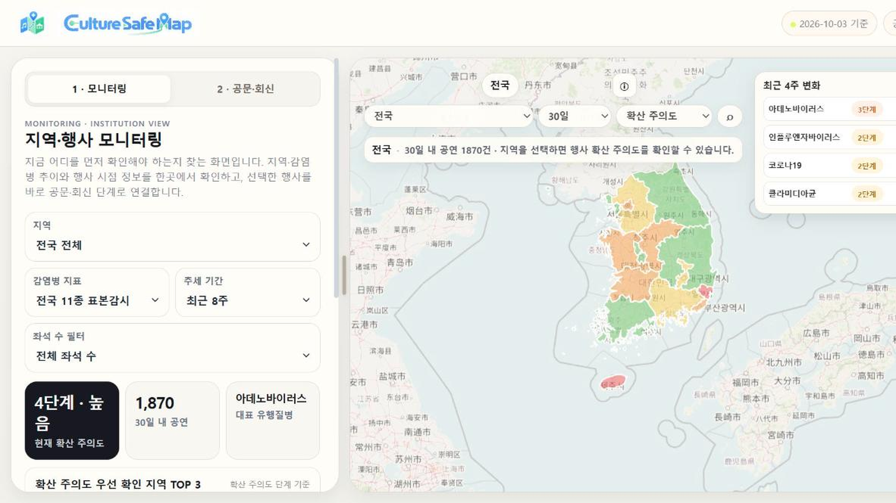
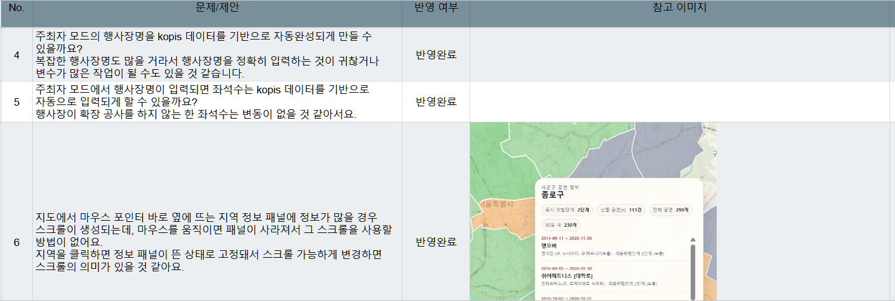

04 컬처세이프맵 기획 총괄
팀 프로젝트 · 기획·총괄
컬처세이프맵은 문화행사와 호흡기 감염병 유행 정보를 한 화면에 연결해 기관이 행사 검토에 필요한 정보를 확인하도록 구성한 지도형 대시보드입니다.
역할
기획·총괄, 발표 구성, 화면 검토와 QA 개선 제안
팀원
데이터 수집·분석, 서비스·대시보드 구현

지역·행사 모니터링 → 행사 검토 → 공문·체크리스트 회신과 평가 확정
01 · PROBLEM
행사 정보와 감염병 정보는 각각 찾아볼 수 있지만 행사를 검토하려면 두 자료를 직접 찾아 맞춰 봐야 했습니다. 컬처세이프맵은 이 정보를 한 화면에 모으는 데서 출발했습니다.
| 확인한 문제 | 내용 |
|---|---|
| 출처의 분산 | 행사 정보는 공연예술통합전산망(KOPIS)·예매처, 감염병 정보는 질병관리청 등에서 따로 제공 |
| 단위의 차이 | 행사는 날짜·행사장 단위, 호흡기 감염병 표본감시는 전국·주 단위, 지역별 자료는 질환에 따라 시도·월 단위 |
| 의미 설명의 필요 | 표본감시값은 전국 전체 환자 수가 아니어서 모아 보여 줄 때 지표의 의미와 적용 범위 안내가 필요 |
해석 범위: 기사 언급 빈도는 실제 취소 건수·서비스 수요·감염 인과관계의 근거가 아님
02 · DECISION
처음에는 행사장 조건과 감염병 유행 정보를 결합해 독자적인 지표를 만들려 했습니다. 그러나 법정감염병 11종을 하나로 대표하는 유행 지표가 없었고 당시 팀이 확보한 지역 단위 자료는 인플루엔자 하나뿐이었습니다. 지표를 정하지 못해 지도에 데이터를 연결하는 작업이 몇 주째 멈춰 있었습니다.
마감이 약 2주 앞으로 다가왔고 마지막 주에는 팀원들의 외부 실습이 예정되어 있었습니다. 지도 완성이 늦어지면 테스트뿐 아니라 지도를 바탕으로 발표 자료를 만드는 팀원의 작업 시간도 줄어드는 상황이었습니다.
저는 기관의 판단을 돕는 도구라는 목적에 맞춰 행사장 자체의 위험 요인 평가 점수를 지도 색상에 사용하고 감염병 유행 정보는 별도로 제시하자고 제안했습니다. 팀원 전원의 바람이 팀의 독자적인 대표 지표를 만드는 것이었기에 쉽게 하기 어려운 제안이었지만 남은 일정과 후속 작업을 고려해 말을 꺼냈고, 방향을 조정했습니다. 이후 중간 발표에서 강사에게 이 제안의 타당성을 질문했고 동일한 방향의 피드백을 받아 팀의 합의를 굳혔습니다.
지도 색상은 실제 감염 확률이 아닌 행사장 조건에 따른 상대적 검토 지표이며 최종 화면에서는 '확산 주의도'로 표현했습니다.
| 판단 | 반영한 내용 |
|---|---|
| 기관의 행사 검토에 집중 | 이용객·주최자·기관을 한 화면에서 함께 다루던 구상을, 기관의 업무 흐름 중심 서비스로 재구성 |
| 필요한 정보에 집중 | 지도 중심 화면에 확산 주의도, 대표 유행 질병, 최근 4주 변화만 우선 배치 |
| 지표를 이해하기 쉽게 전달 | 전문 용어를 쉬운 표현으로 바꾸고 정보의 범위를 안내. '위험도'는 행사 금지로 오해되지 않도록 '확산 주의도'로 변경 |
검토 항목은 「군중행사 감염병 위험평가 매뉴얼」의 위험 요인 6개 가운데 세 가지(장소·환기·밀집도, 행사 진행 기간, 예방수칙 준수 수준)를 참고해 구성했습니다. 기관은 행사 주최 측에 공문과 완화요인 체크리스트(7개 요인·18개 항목)를 보내고 회신 내용을 반영해 담당자가 최종 평가를 확정합니다.
표현 원칙: 전국 표본감시 지표를 특정 지역의 관측값으로 표시하지 않음 · 인과관계·개인별 감염 위험·의료적 진단을 제시하지 않음 · 최종 평가는 담당자 확인 후 확정
| 단계 | 화면에서 하는 일 |
|---|---|
| 1 · 모니터링 | 지역·좌석 수로 행사를 좁히고 지역별 확산 주의도와 대표 유행 질병 추이를 지도와 함께 확인 |
| 2 · 행사 검토 | 선택한 행사의 기본정보와 행사 시점의 감염병 추이, 공문 검토 대상 선정 사유 확인 |
| 3 · 공문·회신 | 공문·체크리스트 초안 생성(한글 파일 내려받기), 주최 측 온라인 회신 자동 반영, 담당자 평가 확정 |
03 · QA
검토에 필요한 정보와 표시 기준을 정한 뒤, 실제 화면에서도 행사와 지역 정보를 함께 확인할 수 있는지 점검했습니다.
문제행사를 선택해도 지도에 관련 지역이 표시되지 않아 화면의 큰 비중을 차지하는 지도가 상세 정보와 연결되지 않았습니다.
판단상세 정보를 보는 동안에도 지도에서 지역 맥락을 확인할 수 있어야 한다고 보고 행사 선택 시 해당 지역을 표시하자고 제안했습니다.
반영팀원이 구현에 반영했습니다.
확인행사를 선택하면 해당 지역이 지도에 표시됩니다.
문제마우스를 올렸을 때 나타나는 지역 정보 패널이 포인터를 옮기면 사라져 긴 내용을 스크롤할 수 없었습니다.
판단정보가 표시되는 것에 더해 끝까지 읽고 확인할 수 있어야 한다고 보고 지역을 클릭하면 패널이 유지되도록 제안했습니다.
반영팀원이 구현에 반영했습니다.
확인클릭한 지역의 패널이 유지되어 스크롤로 전체 내용을 확인할 수 있습니다.

QA 범위: 팀 내부 화면 점검 · 외부 이용자 테스트 미실시
04 · RESULT
지표 범위를 조정해 남은 기간에 지도 구현과 화면 점검을 마쳤고 행사와 유행 상황의 확인에서 공문·회신과 평가 확정까지 업무 흐름을 하나로 이었습니다.
수료 이후에는 실제 데이터를 반영해 기관의 검토 도구로써 실용성을 높이려 합니다. 문화행사 정보도 충분히 수집해 일반 이용자에게 행사 정보를 제공하는 방향으로 확장할 계획입니다.
현재 단계: 발표용 시제품 · 공문 발송과 회신은 시연 흐름 · 검토 시간·업무 효율·감염 위험 변화는 미측정